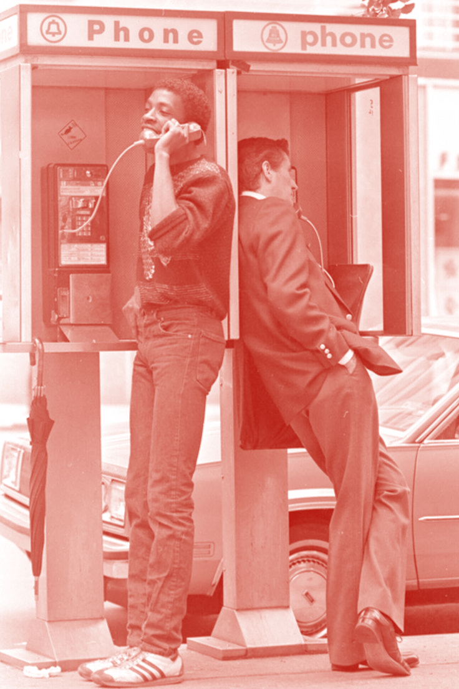
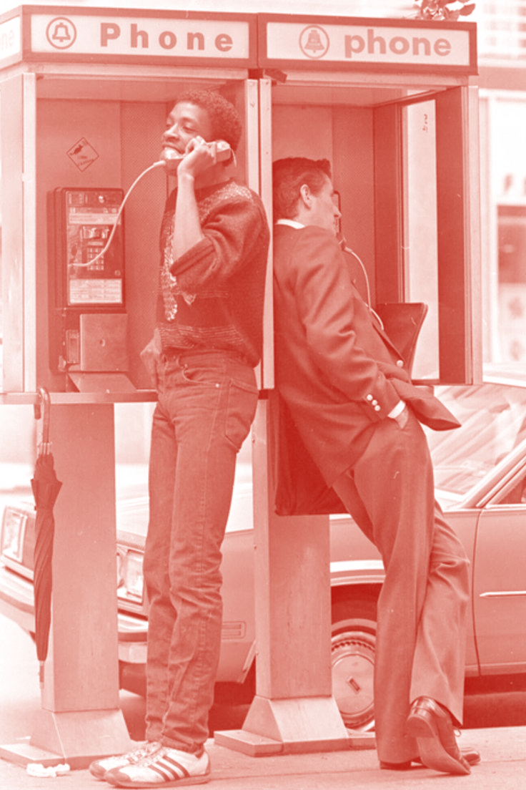
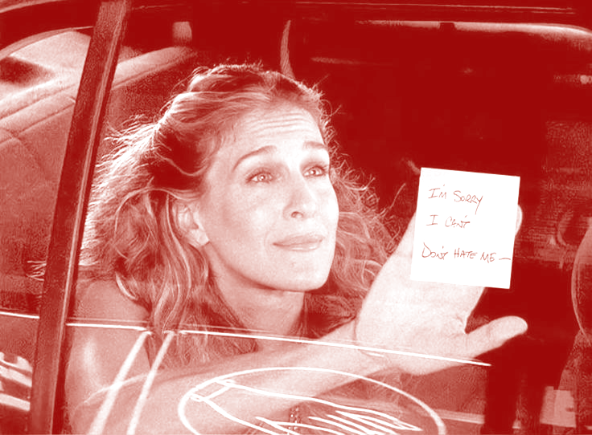
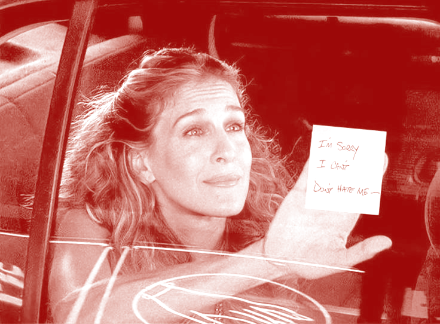

Feeling sexy is not frivolous.
Getting in touch with our true desires
is critical if we want to feel connected,
happy, driven, and alive. Our phones aren’t
solely to blame for the lack of sexy vibes
in the world, but they play a central role.
Nothing about our phones is sexy.
From the things they allow us to do,
to how they feel to use, to what
they ultimately symbolize.
Sexy things are fleeting.
The internet is forever.
The kind of virile,
salty life so many of us
crave is incompatible with
our sanded-down, stagnant,
sanitized online existence.
The chance encounter,
the pregnant pause,
the flirtatious touch,
the generous laugh—
these are the sexy,
ephemeral moments of life.
The scroll is endless.
What’s sexy is always here and now,
not somewhere, out there, forever.
We need to remember that everything of
this world has a beginning and an end
(especially the sexy things).
We can’t escape the normal ups
and downs of life or the passage of time.
We need to allow ourselves to
be restless and bored,
to be less preoccupied with
the opinions of others,
and to look honestly within ourselves.
We need to get off of our phones and hear the gravel
crunching under our feet.
Our phones promise
us something eternal and infinite, but we
should be extremely skeptical of
anything that claims it can go on forever.
Remember this the next time you fall asleep
to a TikTok playing on an endless loop:
one
day
your
heart
will
stop
beating.


 



 
